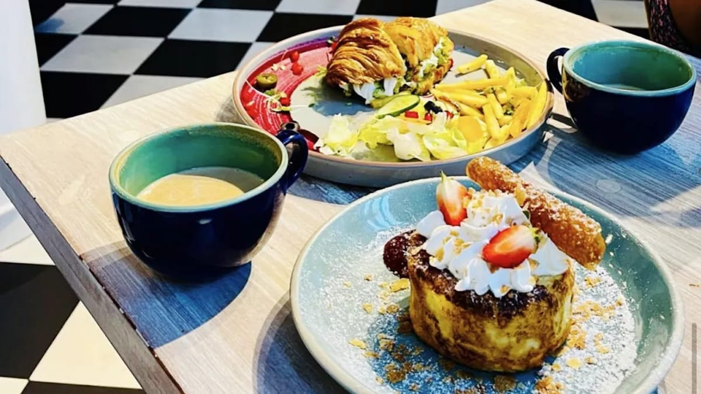
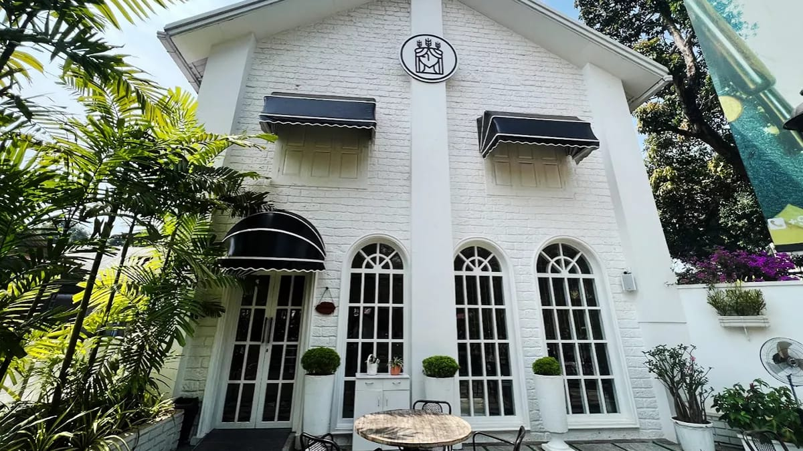
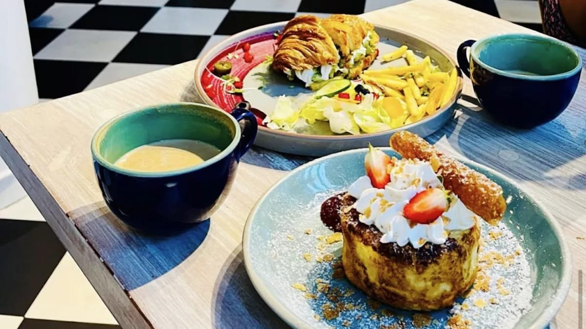
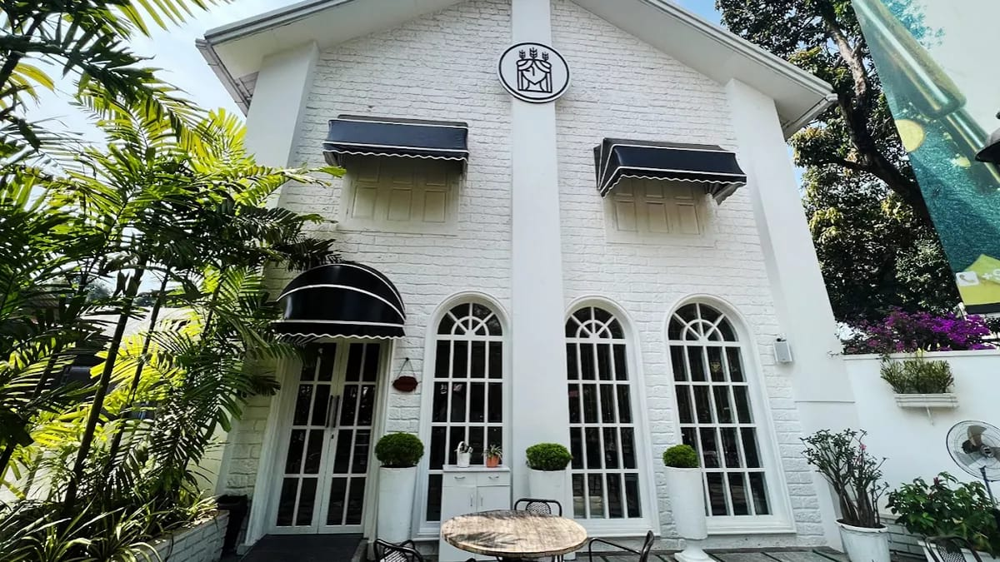

'Hug A Mug'
Hug a Mug is a charming cafe renowned for its cozy ambiance and highly skilled chefs. It offers a delightful menu featuring signature dishes like finger burgers, sandwiches, loaded fries, and expertly brewed coffee. The cafe is a favorite spot for those seeking delicious food and a welcoming atmosphere, perfect for relaxing or catching up with friends.
Opening Hours:
Monday-Friday:24 Hours

Hilite Business Park
'Justloaf'
Just Loaf is a popular eatery in Kozhikode, Kerala, celebrated for its freshly made burgers and fries. Originating as a burger cart, it has evolved into a well-established restaurant offering a diverse menu that includes beef, chicken steaks, and delectable cheesecakes. The establishment is also known for its flavorful coffee and loaded fries. With a rating of 4.4 out of 5 on Google, Just Loaf is a favored spot for both locals and visitors.
Opening Hours:
Monday to Friday: 11:00 am – 02:00 am
Saturday and Sunday: 08:00 am – 02:00 am
'Ladylofella'
Lady Loffella is a chic and cozy cafe in Calicut, renowned for its delightful desserts, artisan pastries, and refreshing beverages. Popular among locals for its elegant ambiance and mouthwatering treats, it’s the perfect spot to relax or catch up with friends.
Opening Hours:
Sunday to Saturday: 10:00 am – 11:00 pm
 



'Kadalas'
Kadalas is a popular cafe located near the Calicut (Kozhikode) beach, known for its relaxed atmosphere and stunning views of the sea. It offers a variety of local and international dishes, including fresh seafood, snacks, and beverages. The cafe is especially loved for its vibrant ambiance, making it a great spot to enjoy a meal while watching the sunset by the beach. It’s a favorite hangout for both locals and tourists, offering a perfect blend of good food, scenic views, and a laid-back vibe.
Opening hours:
Monday to Sunday: 07:30 am – 9:00 pm
'ChockoLick'
Cafe Chocolick in Calicut is a cozy spot known for its decadent chocolate-based treats, cakes, and beverages. With a warm ambiance, it's a great place to satisfy your sweet cravings and enjoy a relaxing time with friends or family.
Opening hours:
Monday to Sunday: 11:00 am – 10:00 pm

'Bun Club'
Cafe Bun Club in Calicut is a cozy and vibrant spot known for its delicious buns, sandwiches, and snacks. It’s a great place to grab a quick bite or enjoy a leisurely meal with friends. The cafe is particularly famous for its soft buns filled with a variety of fillings, perfect for a casual hangout.
Opening hours:
Monday to Saturday: 08:00 am – 9:00 pm
Sunday: 10:00 am – 09:00 pm